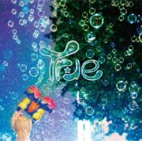

True / 1st Mini Album [どこにもない場所にあるトゥルーピアと本当の気持ち] 2015.4.8 ON SALE!

夢の世界のヒカリと現実世界のヤミを、おとぎ話のように語るけんたの歌詞と、荒々しくもドリーミーなバンドサウンドは、どこまでもフレッシュな初期衝動と青春の鼓動をダイレクトに伝える！！
<収録曲>
1. dolphin kick
2. 自由
3. あの日の魔法
4. TRULY
5. Cherish
6. 目に見えるものでも 目に見えないものでもないもの
DLCR-15031 / 定価:¥1,320(税込)
------------------------------------------------------------------
タワーレコード新宿店にてミニライブ＆サイン会が決定しました！
★ミニライブ＆サイン会★
開催日時 ：2015年5月22日(金) 19：00スタート
開催場所：タワーレコード新宿店 7Fイベントスペース
＜参加方法＞
ご予約者優先で、タワーレコード新宿店、渋谷店、池袋店、秋葉原店、横浜ビブレ店にて4/8（水）発売 True 1st MA『どこにもない場所にあるトゥルーピアと本当の気持ち』（DLCR-15031）をお買い上げの方に先着で「サイン会 参加券」を配布致します。商品ご購入時にCD1枚につき、参加券1枚を差し上げます。
※ミニライブ終了後、サイン会を行います。参加ご希望の方は、参加券と対象の商品を忘れずお持ち下さい。
＜ご注意事項＞
※対象商品のご予約はお電話とタワーレコードホームページ(http://tower.jp/)の店舗予約サービスでも承っております。
※ご予約のお客様には優先的にサイン会参加券を確保し、商品購入時に差し上げます。
※ミニライブは観覧フリーとなっております。
※「サイン会参加券」は無くなり次第終了となりますので、ご了承ください。
※イベントはサイン会参加者の待機列が途切れ次第終了とさせて頂きます。
※いかなる場合においても「サイン会参加券」の再発行は致しません。
※対象商品の不良品以外での返品･返金はお断り致します。
※イベント中は録音・録画・撮影等の行為、店内での飲食は一切禁止とさせて頂きます。
※イベント当日は係員の指示に必ず従ってください。係員の指示に従って頂けない場合、イベントへのご参加をお断りすることがございます。
※諸事情によりイベントの内容変更や中止がある場合がございます。予めご了承ください。
【対象店舗】 タワーレコード新宿店、渋谷店、池袋店、秋葉原店、横浜ビブレ店
【お問い合わせ先】 タワーレコード新宿店：03-5360-7811 ------------------------------------------------------------------
タワーレコード名古屋パルコ店にて
アコースティックミニライブ＆サイン会が決定しました！
★アコースティック ミニライブ＆サイン会★
開催日時：2015年5月24日（日） 13：00スタート
開催場所：名古屋パルコ西館１階イベントスペース
【対象店舗】タワーレコード 名古屋パルコ店/名古屋近鉄パッセ店